General
7 days recommended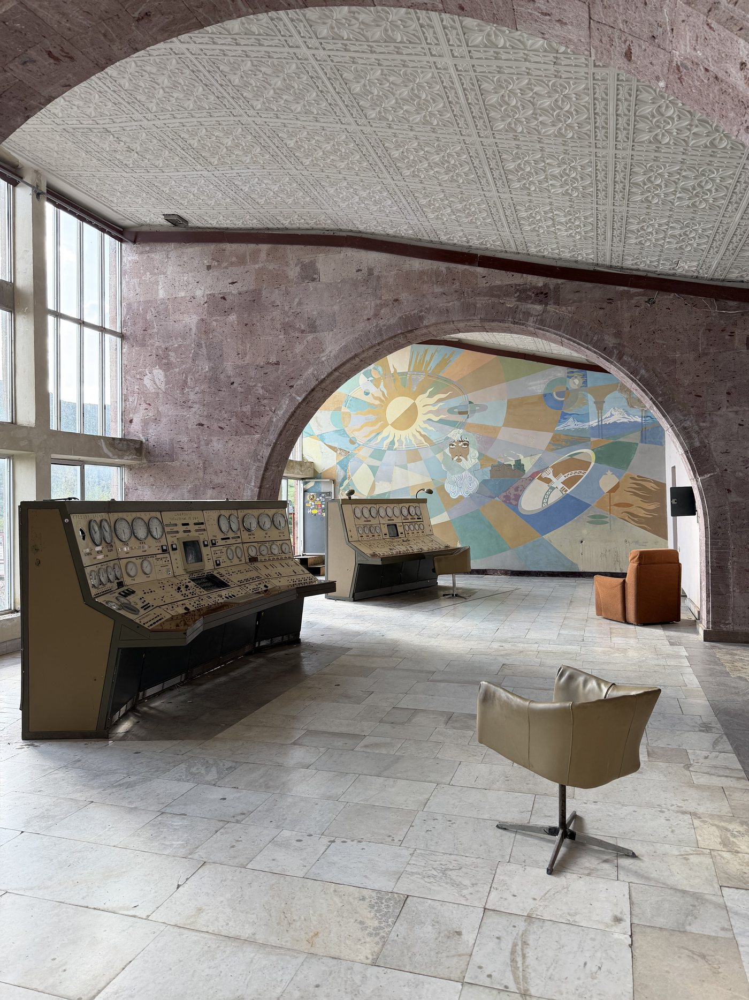
- Armenia is one of the most underrated countries I've been to. It's safe, cheap, not crowded (I didn't wait in a line once) and most of the sights are a day trip from Yerevan. A week stands on its own, but most travelers I met paired it with Georgia next door
- It's a country of contrasts. Yerevan and Gyumri are clean and modern, but the countryside gets noticeably poorer and more Soviet the moment you leave them. The history is dark and layered: the first Christian country (301 AD), four centuries under the Ottomans, the Armenian Genocide, 70 years in the Soviet Union and a war with Azerbaijan in 2023
- My top 3↗ — the Orgov Observatory, the Geghard, Garni and Symphony of Stones day tour and the Cascade in Yerevan. The rest of the list is in my Top 10 Things to Do in Armenia
- Base yourself in Yerevan↗ — almost every sight is under three hours from the capital, so you never have to repack your bag. Here is a rough itinerary: Yerevan (days 1 to 3), the monastery tour (day 4), Lake Sevan and Orgov (day 5), Gyumri (day 6) and a free day for the south
- When to go↗ — May to June or September to October. I went in mid-May: green valleys, wildflowers, snow still on the peaks and a jacket in the evenings. Summers in Yerevan push past 95°F (35°C) and everyone escapes to Lake Sevan; winters are properly cold and some mountain roads close
- Getting there↗ — fly into Zvartnots (EVN), 20 minutes west of Yerevan, usually via Istanbul, Vienna, Athens, Doha or Moscow. Overland, Georgia is the only practical option: the borders with Türkiye and Azerbaijan are closed, and Iran is a whole other story
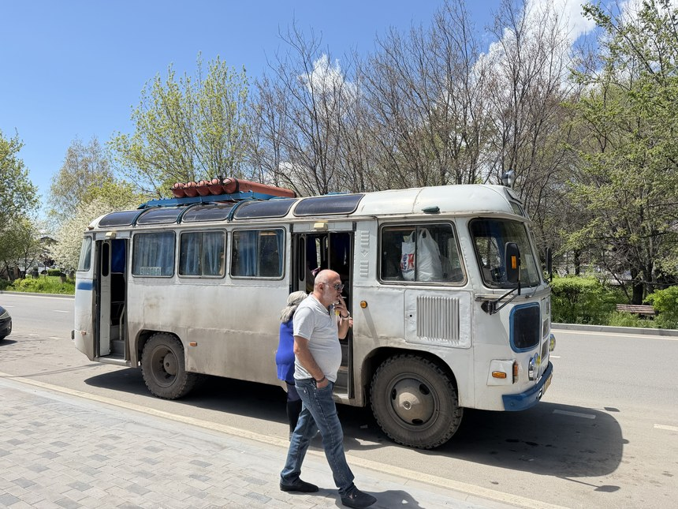
- Marshrutka↗ — the shared minibuses that reach nearly every town and how most Armenians get around. Fares are extremely cheap at just a few dollars for a ride across the country. The one downside is there is no schedule: the van leaves when it's full, so build some slack into your day
- Yandex Go and GG↗ — Armenia's Uber and the easiest way around Yerevan, $2 to $5 a ride. The apps are reliable, but drivers often prefer cash and their English is hit or miss
- Rental car↗ — about $30 to $40 a day and the best way to see the countryside (we used Routes Car Rental). Roads are well kept and the drives are beautiful. The exception is Yerevan at rush hour, where traffic is bad and drivers treat red lights as a suggestion
- Buses and metro↗ — I wouldn't bother. Neither took my foreign card, the routes miss most of the places you'll want to go, and taxis are cheap enough
- Cash↗ — the Armenian Dram (AMD) is the official currency. Cards work in Yerevan's restaurants, hotels and bigger shops, but markets, marshrutkas, street vendors and most small-town restaurants are cash only. Carry small bills: drivers and vendors often can't break the big notes the ATM gives you
- Safety↗ — it stopped crossing my mind after the first day, and I walked around Yerevan and Gyumri at night without a problem. The caveat is geopolitical: relations with Azerbaijan and Türkiye are tense and you'll see military traffic on the roads. It doesn't affect tourists, but check the current travel advice and don't plan a route that assumes those borders will open
- Visa↗ — 180 days visa-free for US, Canadian, EU, British and Australian passports. No fee, no onward ticket check, and I was through in under a minute
- Language↗ — Armenian, with its own alphabet. Russian is the second language almost everyone speaks and younger people in Yerevan speak good English. A few Russian phrases go a long way, and people went out of their way to help even when we had no common language
One of the best-value countries I've been to: a multi-course meal came to less than $10 to $15, rideshares are $2 to $5 and a full-day tour is $15 to $30↗
Armenian cuisine was one of the highlights of my experience. Here are some dishes worth trying while you're in the country:
- Lahmajun↗ — the national dish: a thin flatbread covered in spiced lamb, light enough for an afternoon snack. Best in Yerevan at Anteb Restaurant and Elie's Lahmajun
- Manti↗ — small dumplings baked until the tops are crunchy, served with yogurt and tomato sauce (the Turkish version is boiled). Get them at Mayrig Yerevan
- Lavash↗ — the thin flatbread baked in an underground oven and served with every meal
- Khorovats↗ — skewered meat grilled over wood, the closest thing here to Persian barbecue
- Sujukh↗ — walnuts threaded on a string and dunked in grape juice until it hardens. Free samples at GUM Market, where nobody pushes you to buy
- Armenian brandy↗ — what Armenians are quietly proud of. Tour the Ararat Brandy Factory to learn more about the production process
- Coffee↗ — coffee is everywhere and grabbing a coffee with a friend is the main way to socialize
Yerevan
3 days recommended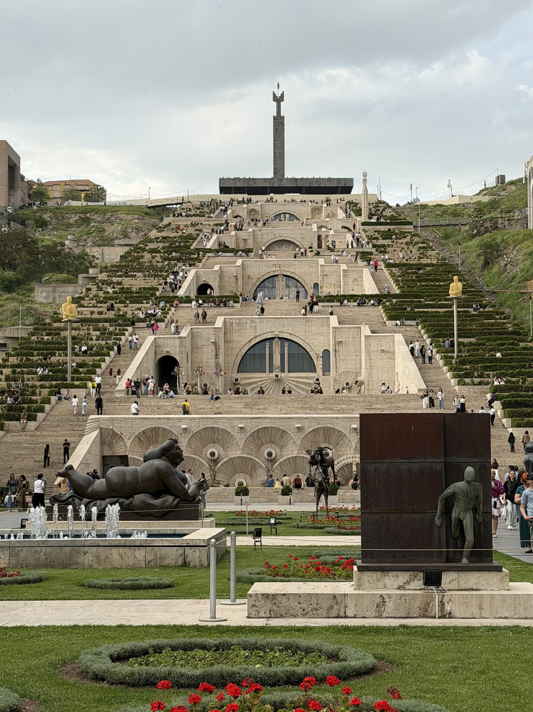
One of the oldest continuously inhabited cities in the world that is 29 years older than Rome! Yerevan is built of a distinct pink volcanic stone and much more modern than you'd expect. The city is walkable, cheap and 1 to 2 hours from most of the country, which makes it the perfect base for your trip. Give it 3 days and add on extra days for each day trip↗
- From the airport↗ — a Yandex Go or GG from Zvartnots (EVN) costs 2,500 to 3,500 AMD ($6 to $9). Stick to that price: a driver tried to charge me $20 late at night. Bus 201 also runs to the city center for 300 AMD from 7:30 AM to 9:30 PM
- From Tbilisi by marshrutka↗ — vans leave from Avlabari metro station or Ortachala bus station when full so show up before 9 AM. Rides will cost $15 to $20 and last about 6 hours including the border at Sadakhlo, where everyone gets out with their bags
- From Tbilisi by bus↗ — about $20 and 5 to 6 hours with a reserved seat and air conditioning. Book at the station or on Busbud or Omio
- From Tbilisi by night train↗ — leaves at 8:20 PM and arrives at 6:55 AM; about $35 second class or $60 first. Trains leave daily in summer, every other day the rest of the year. Tickets sell out, so book a week or two ahead on the Georgian Railway site. Expect border officers to come through the cabin around midnight to check passports
- Getting around↗ — stay in the center and walk: Republic Square and the Cascade are under 20 minutes on foot from almost everything. Rideshares across the center are 600 to 1,500 AMD ($1.50 to $4) and arrive in under 5 minutes
- Republic Square↗ — the main square, ringed by pink stone buildings that glow red at golden hour: the Government House with its clock tower, the History Museum and the old Armenia Hotel. Come back after dark for the Singing Fountains show, around 9 PM from April to November
- National Gallery of Armenia & History Museum↗ — the best art museum in the country stacked on top of the History Museum, home to the world's oldest leather shoe. Entry is 2,000 AMD ($5) and it takes about an hour. Tuesday to Saturday 11 AM to 5 PM, shorter hours on Sunday
- Free walking tour↗ — do it on day one. Our tour guide covered 2,000 years of complex Armenian history honestly, showed us hidden courtyards in the city and the tour finished at Anteb Restaurant over local dishes. Free to book, but bring cash for tips
- The Cascade↗ — the top thing to do in Yerevan. 572 limestone steps with modern art sculptures on every terrace, and a gorgeous view of Mount Ararat from the top. Go before noon for the clearest sky or in the evening when it's lit
- Armenian Genocide Museum↗ — an important visit to understand the Armenian Genocide, in which about 1.5 million Armenians were killed between 1915 and 1923. An underground museum and monument of 12 leaning slabs around an eternal flame on Tsitsernakaberd Hill. Visiting is free and budget 2 to 3 hours to fully experience the museum. On April 24, Remembrance Day, the whole city walks up with flowers
- GUM Market↗ — a traditional indoor Armenian market locals actually use, on Movses Khorenatsi Street, 15 minutes south of Republic Square. Sample the dried fruit, nuts and sujukh up front and watch the butchers at the back. Open from 10 AM to 6 PM every day, busiest in the morning
- Vernissage Market↗ — the open-air souvenir market two blocks east of Republic Square, selling carpets, carved wood, Soviet medals and chess sets. Most stalls only open on weekends, so go Saturday or Sunday morning. Good for souvenirs, but GUM is the better cultural experience
- Kond↗ — the oldest neighborhood with a street plan unchanged since the 1600s. Walk the copper-lined Kond Pedestrian Tunnel and stop at Kond House Coffee, a few tables in a family's courtyard. The whole area takes an hour or two
- Blue Mosque↗ — the only mosque in Armenia with intricate blue tile designs characteristic of Persian style mosques. It is free to visit and the courtyard garden is the best part

- Mother Armenia & Victory Park↗ — a 22-meter bronze statue on the hill above the Cascade (a 10-minute walk from the top), surrounded by Soviet tanks, planes and a WWII eternal flame. The Military Museum inside the pedestal is a few hundred dram, and the rest of the park is a faded Soviet amusement park with the abandoned Aragil restaurant
- More if you have time↗ — the Ararat Brandy Factory tour through the barrel halls with a tasting (about $13, book ahead in summer); a ballet or opera at the Armenian National Opera and Ballet Theatre; the Matenadaran manuscript library; and the lobby of the 1930s Moscow Cinema for its marble relief of Soviet musicians
- Mayrig Yerevan↗ — one of my favorite meals and the fanciest place I ate. Order the manti, baked crispy and layered with yogurt and tomato
- Yerevan Tavern↗ — recommended by locals, with a live band playing traditional music every night. Where locals go to celebrate important anniversaries and birthdays
- Elie's Lahmajun↗ — a cheap restaurant serving a massive lahmajun big enough for two
- Anteb Restaurant↗ — Western Armenian cooking and the other best lahmajun in town; where my walking tour ended
- Tumanyan Khinkali↗ — a multi-story place in the center doing Georgian and Caucasian food
- AfroLab Specialty Coffee↗ — the best coffee in Yerevan where I went back to most, a working roastery doing single-origin coffee
- Lumen Coffee 1936↗ — a modern coffee shop located in a historic location with old wood paneling in the front room and a co-working space at the back
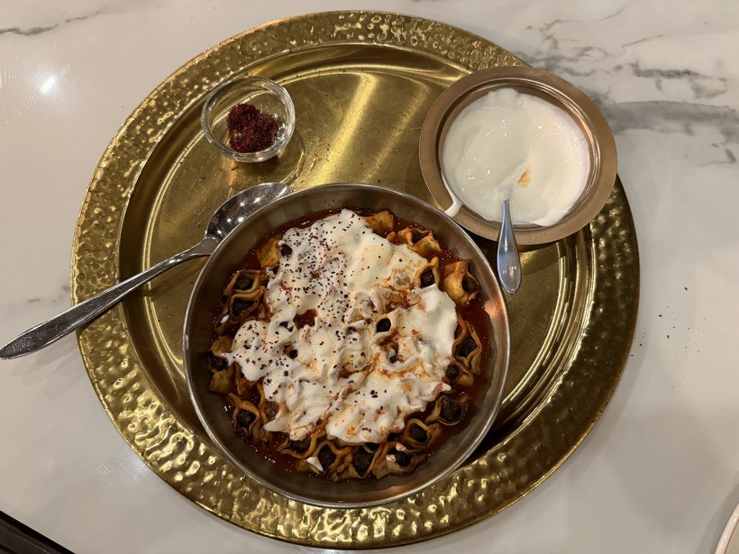
Stay downtown: most sights are walkable and rush hour makes anywhere else a hassle. Dorm beds start around $8 and a proper hotel in the center is about $50↗
- Kantar Hostel↗ — 5 minutes from Republic Square, a free breakfast buffet (lavash, string cheese, tomatoes, olives) and a common room that's busy every night, so it's the easy place to meet people. My pick as the best hostel in town
- Yellow Fox Hostel↗ — family-run across town by a woman and her mother, with a lot of care but very basic rooms. I would choose Kantar over Yellow Fox
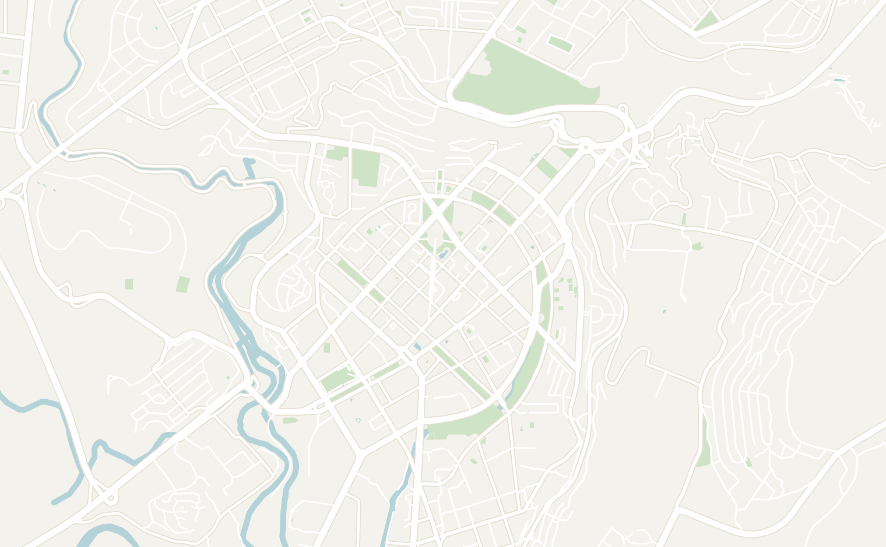
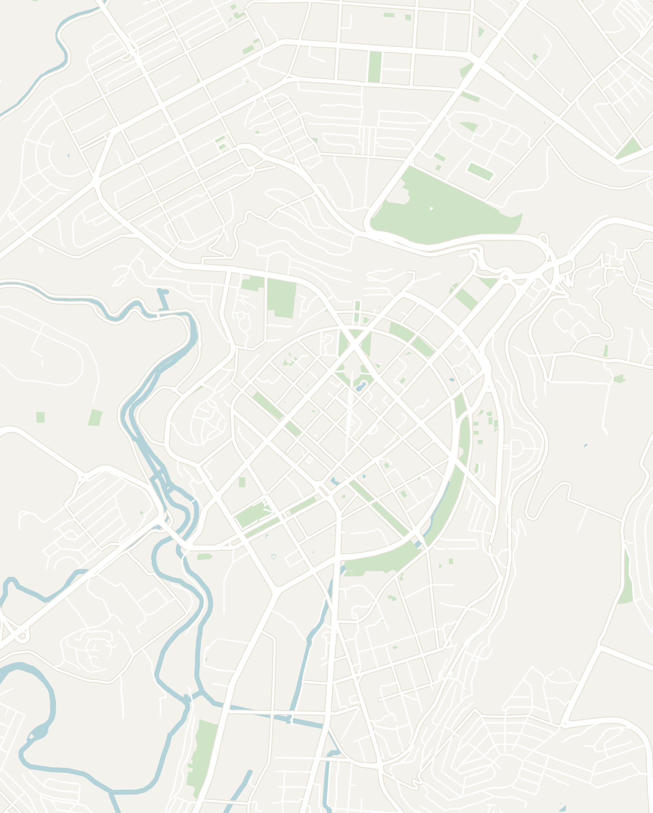
Double-tap to open in Google Maps
Khor Virap, Geghard & Garni
1 day from Yerevan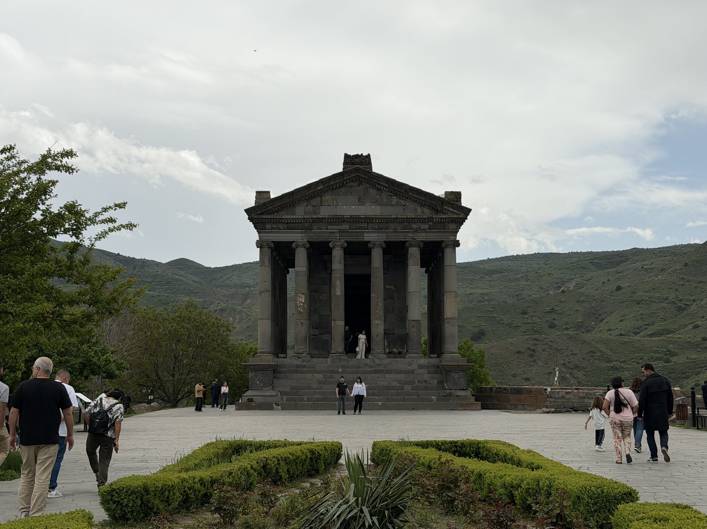
- Book the tour↗ — the Khor Virap, Garni, Geghard, Symphony & Charents Arch tour covers most of Armenia's headline sights in one unrushed day for $15 to $30. I paid $23 on GetYourGuide, lunch and a lavash demo included. It leaves in the morning from Republic Square. You can drive it yourself, but the tour is cheap enough that I wouldn't bother
- Khor Virap↗ — the 4th-century monastery alone on a green plain with Mount Ararat filling the sky behind it. Climb the little hill behind it on a clear day for the view and then go down into the pit where Gregory the Illuminator was held for 13 years before Armenia became the first Christian country


- Geghard Monastery↗ — my favorite monastery in Armenia: carved into the cliff, with a shaft of light beaming into a black chamber and a spring running through the rock. Named for the spear that pierced Christ, kept here for centuries. Rows of yellow candles burn in the dark rock chapels, and walking in from the bright hillside feels like stepping into a scene from the Bible


- Lavash demo & lunch↗ — a demonstration where the "lavash master" slaps dough against the inside of an underground oven. The best bread I ate in Armenia, followed by a lunch of salads, kebab and more lavash that beat most tour lunches
- Symphony of Stones↗ — massive hexagonal basalt columns five or six stories tall lining a green gorge, with about a mile of path along the river below Garni
- Garni Temple↗ — a Greco-Roman pagan temple from 77 AD on the cliff above the gorge, the only one in Armenia to survive the rise of Christianity


- Charents Arch↗ — a Soviet arch for the poet Yeghishe Charents, built to frame Mount Ararat. Supposedly the best photo of Mount Ararat on a clear day
Orgov Observatory & Lake Sevan
1 day by car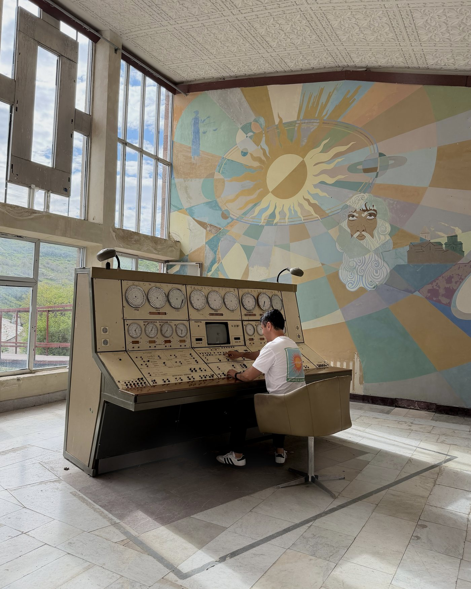
- Orgov Observatory (ROT-54)↗ — the best thing I did in Armenia. A Soviet radio telescope finished in 1985 and abandoned when the USSR collapsed. Hosts a massive satellite dish you can walk straight up, a control room with three consoles and a pastel mural

- Getting in↗ — you technically need a government permit bought in Yerevan, but the guards at the gate took 2,000 AMD (about $5) each and waved us in
- Getting there↗ — about an hour west of Yerevan and not reachable by public transport. Rent a car, book a private tour with Armenian Explorer, or take a Yandex Go and arrange the ride back with the driver
- On site↗ — give it 2 to 3 hours. Wear sturdy closed-toe shoes (mud, broken glass, scrap metal) and watch your footing indoors, where some floors aren't sound. There's talk of restoring it, so go while you can


- The road trip loop↗ — with a car, Orgov fills a day with three more stops. We left Yerevan around 10 AM and were able to stop at the Black Wall, the abandoned plane and Sevanavank Monastery, then the observatory, getting back by 6 PM
- Lake Sevan & Sevanavank Monastery↗ — Armenia's bright blue lake, 1.5 hours north of Yerevan, where locals escape the summer heat. Climb the monastery hill on the peninsula for the view over the lake to the Sevan Writers' House. Half a day on its own
-mob-2x.jpg)

- The Black Wall↗ — an abandoned mine face at the end of a dirt road through a tiny village, no signs, no visitors. A 20-minute stop and skippable, but getting there was an adventure
- The abandoned Soviet plane↗ — a Tu-134A airliner parked on the shore of the Hrazdan Reservoir, strung with Christmas lights for reasons nobody could explain
- Tsovagyugh Food Court↗ — a roadside supermarket and hot-food bar on the north shore of Lake Sevan
Gyumri
1 day recommended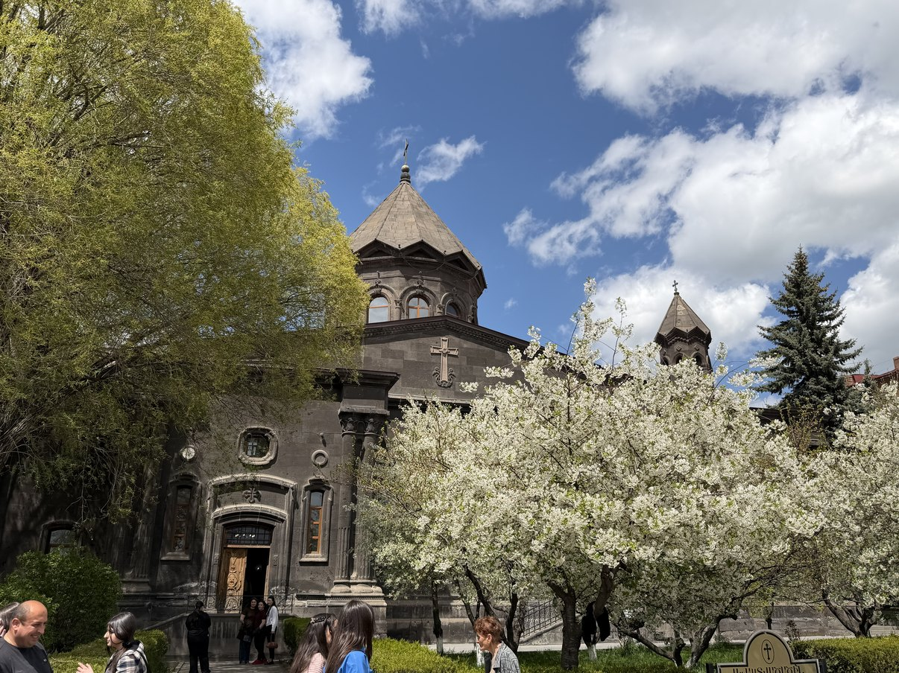
Armenia's second city that is also known as the "Black City," for the dark volcanic stone of its old center. Every guide made it sound like it was still in ruins after the 1988 earthquake; instead it was one of the biggest surprises of my trip, with more traditional architecture than anywhere else in the country and not another tourist all day. One unhurried day is enough, but stay the night if you can↗
- Marshrutka↗ — from the lot behind Yerevan Railway Station (walk through the underground tunnel). Roughly hourly from about 8 AM; about 3 hours for 1,500 AMD (about $4). Go straight to the station: the van rarely stops at the bus stop Google Maps or Yandex suggests, and I waited 20 minutes there before figuring it out
- Train↗ — from the same station, 2 to 3 hours but less frequent. Timetable and tickets on the South Caucasus Railway website
- Car or rideshare↗ — a rental runs about $30 to $40 a day and the scenery is gorgeous. A Yandex the whole way is the pricey option, only worth it if you miss the last van
- Getting around↗ — everything downtown is within 20 minutes on foot; take a Yandex up the hill to Mother Armenia and the Black Fortress
- St. All Saviors Church↗ — at the end of a long reflecting pool lined with willows, with a brutalist 1988 earthquake memorial in front and pieces of the facade still lying in the grass. Inside it's flashy and freshly painted. Free, 15 minutes; fountain show on summer evenings
- Vardanants Square↗ — the main square that is home to Gyumri City Hall, the cathedral, and bronze statues of the heroes of the Battle of Vardanants
- Cathedral of the Holy Mother of God↗ — my favorite spot in Gyumri: a black stone church in a huge yard of trees that were all white blossom when I visited. Its two domes fell in the earthquake and sit on the ground where you can walk right up to them

- Abovyan Street & Rijkov Walking Street↗ — the black stone heart of the Kumayri historic district: carved doorways, iron balconies and courtyards behind wooden gates. Abovyan has the nicer shops and cafés, Rijkov is quieter with street vendors; both come alive at night. Wander the side streets for Soviet relics (old Ladas, torn posters, a red 1950s hot dog cart)
- Museum of National Architecture and Urban Life↗ — a 19th-century merchant's mansion that once belonged to a wealthy family, 10 minutes from the main square
- Mother Armenia of Gyumri↗ — on a hill at the western edge of town and, to my eye, better looking than Yerevan's. A walkway of stones engraved with the Soviet Hero Cities leads up to her, beside a brutalist WWII memorial with a raised fist and an eternal flame
- The Black Fortress↗ — a ring of black stone built by the Russian Empire in the 1830s, located a 5 minute walk from Mother Armenia. The inside has been rebuilt as an event space with gold balconies and red curtains. Free, but only worth it if you're already up there
- Gyumri Market↗ — the open-air market locals shop at, with produce, butchers, spice stalls and a blue Soviet-era bread truck. Daily about 9 AM to 6 PM, busiest in the morning, 5 minutes south of the main square
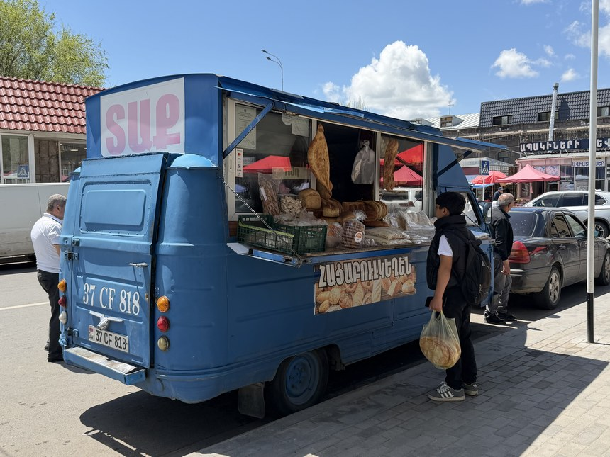
- Central Park↗ — one of the creepiest parks I've been to, 5 minutes west of Vardanants Square: a broken down Soviet amusement park with an arcade of Soviet game machines that still work. Great if you like Soviet nostalgia
- KTOR M↗ — an underground restaurant around the corner from Vardanants Square. I had the khurjin, a knotted parcel of lavash stuffed with lamb, cheese and mushrooms
- Ponchik Monchik↗ — the famous place on Abovyan Street for Gyumri's ponchik, a fried donut typically filled with warm vanilla cream. Only costs 400 to 550 AMD ($1 to $1.50)
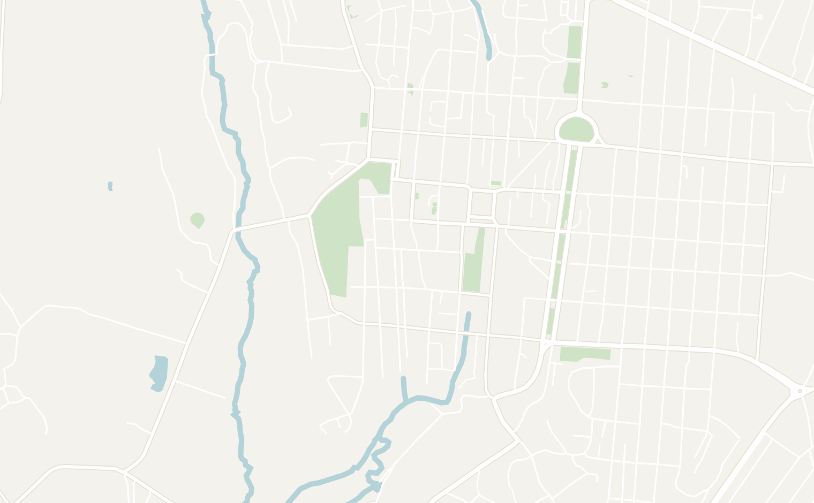
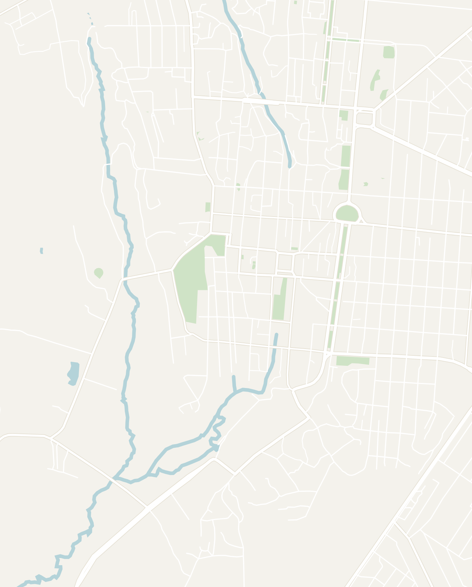
Double-tap to open in Google Maps
Other Places to Consider
- Tatev↗ — my walking tour guide called it the most beautiful part of Armenia, and it's what I regret skipping most: Tatev Monastery, home to great hiking and the world's longest cable car in the far south of the country. Book a day tour or take a marshrutka (about 5 hours each way); worth more than a day
- Dilijan↗ — a small forested town near Lake Sevan, often called Armenia's Switzerland. I heard pretty mixed reviews, so set your expectations accordingly, but it's an easy add-on to the lake
- Alaverdi↗ — an old Soviet mining town near the Georgian border. Worth a stop if you're crossing from Georgia for the Haghpat and Sanahin monasteries and the abandoned Soviet industrial sites
Explore More
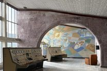
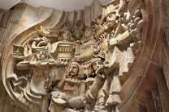
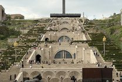